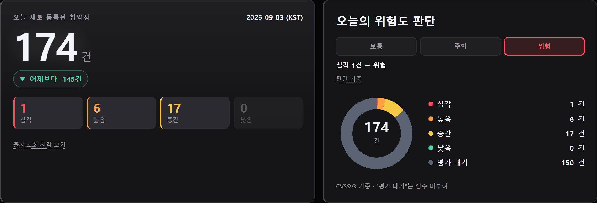
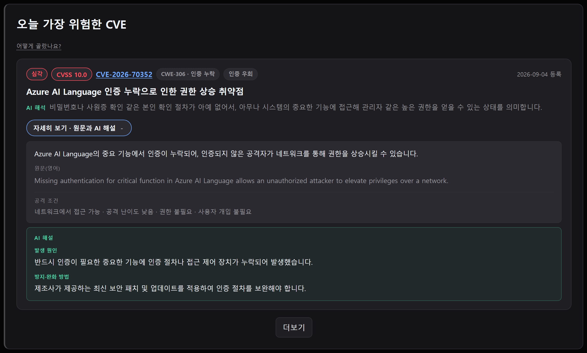
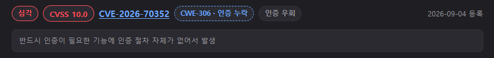
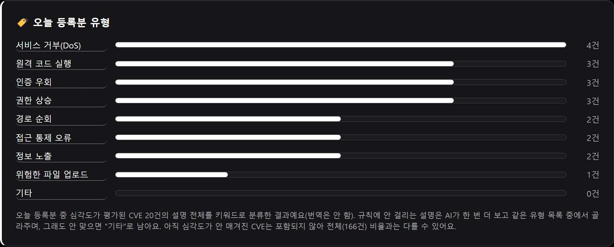
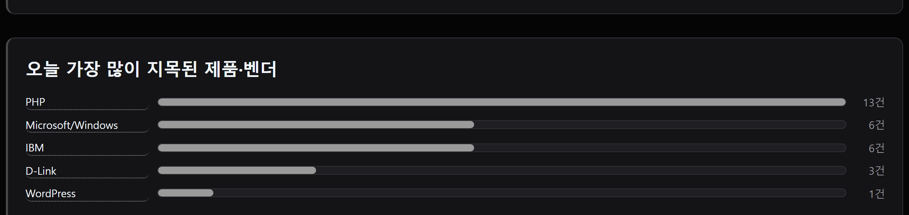
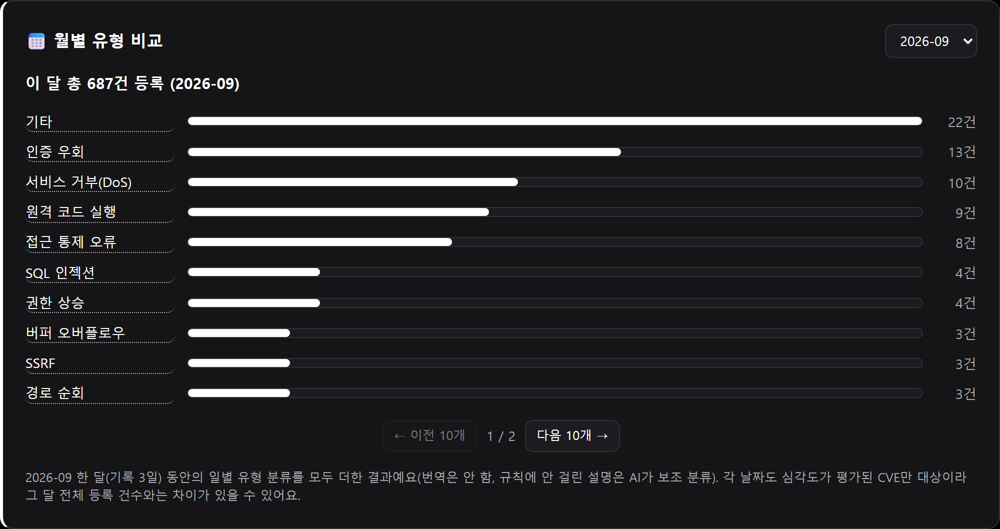
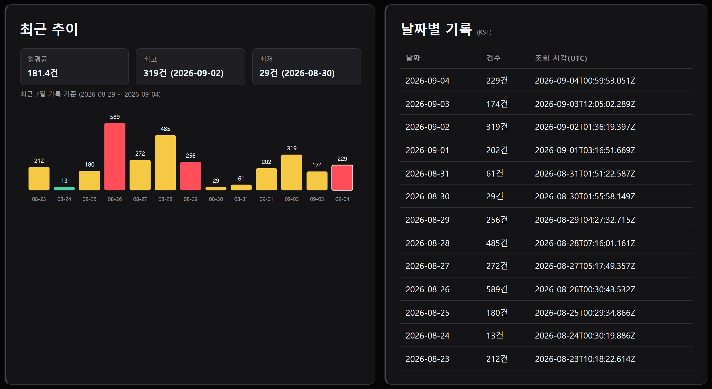
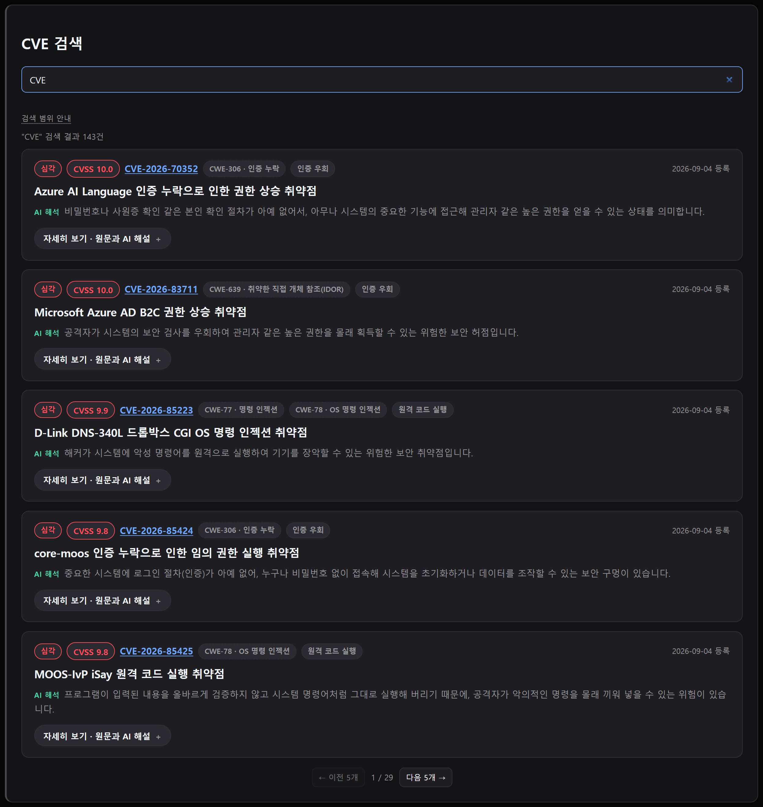
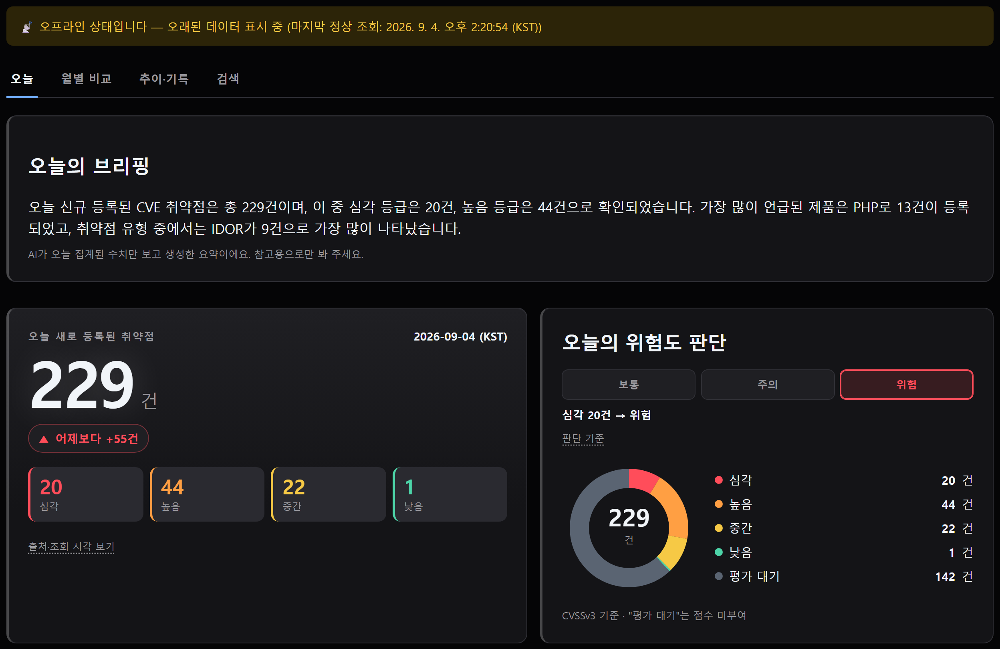

Security Intelligence · Static Dashboard
오늘의 CVE 정보판
NVD가 매일 새로 등록하는 보안 취약점(CVE)을 자동으로 모아 몇 건이고, 얼마나 위험하고, 무엇이 문제인지를 한 화면에서 보여주는 정적 대시보드. 심각한 CVE는 AI가 한국어로 번역·해설하고, 그 AI 출력의 품질은 별도의 평가 프레임워크로 정량 검증한다.
Overview
사람 개입 없이 매일 09:00 KST에 NVD 신규 등록분을 수집·집계·배포한다.
대표 CVE마다 한국어 요약·해석·발생 원인·방지법을 한 번의 LLM 호출로 생성한다.
자체 G-Eval 평가 프레임워크로 분류 정확도·번역 정확도·환각(지어내기) 여부를 정기 측정한다.
정적 사이트 + 무키 공개 API + LLM 무료 티어만으로 운영한다.
API 실패 시 마지막 정상값을 유지한 채 "오래된 데이터" 배너로 투명하게 알린다.
Screenshots
그날 집계된 수치만 근거로 AI가 1~3문장 브리핑을 쓰고, 바로 아래에 오늘 신규 건수와 심각도 분포로 판단한 위험도(보통/주의/위험)를 보여준다.

CVSS 순으로 정렬된 대표 CVE 카드. 제목과 한 줄 해석만 먼저 보이고, 펼치면 원문·번역·발생 원인·방지법까지 나온다(AI 생성 부분은 초록색으로 구분).

CWE 태그를 누르면 그 취약점 유형이 왜 생기는지 근거 문장이 바로 펼쳐진다(지어내지 않고 CWE 공식 정의를 그대로 인용).

"CWE 분포" 같은 분류명 대신 결론을 제목으로 단다. 막대를 누르면 그 유형의 실제 CVE와 해설이 그대로 펼쳐진다.


지난 달들과 유형·제품 순위를 겹쳐 볼 수 있다.

최근 14일 흐름과 날짜별 전체 기록이다.

지금까지 화면에 불러온 CVE를 번호·제품명·CWE·키워드로 바로 찾을 수 있다.

?debug=1로 timeout·인증 실패·호출 제한·오프라인·응답 형식 변경 5종의 실패를 직접 재현해, 값이 유지되고 배너로 상태가 안내되는지 확인할 수 있다.

Architecture
workflow_dispatch 호출data/history.json에 하루 1건 추가 → commit & pushhistory.json을 fetch 해서 렌더링GitHub Actions의 schedule cron은 정시(0분)에 부하가 몰려 실행 시각이 매일 들쭉날쭉해지는 문제가 있어, 실행 시각만 Cloudflare Cron Trigger가 정확히 맞춰 트리거하고 실제 작업은 GitHub Actions가 그대로 수행한다. 서버리스 프록시 없이 정적 사이트 + 하루 1회 배치로만 굴러간다.
모델을 직접 재학습하는 대신, 각 LLM 호출의 출력물을 독립된 방식으로 채점하는 구조를 택했다.
분류는 정답이 있는 닫힌 문제라 NVD 공식 CWE로 만든 골든셋과 직접 대조하고, 번역·해설·브리핑은 정답 문장이 없는 열린 텍스트라 이 프로젝트가 가장 중시하는 "지어내지 않는다" 원칙을 기준으로 G-Eval이 채점한다. 심사 모델은 Gemini 자기 채점(할당량 문제·자기 편향 우려)을 폐기하고, 완전히 다른 제공사·모델인 Claude가 별도의 새 세션에서 API 호출 없이 직접 채점하는 방식으로 정착했다.
AI Quality Evaluation
전체 방법론·사례 분석은 AI_EVAL_REPORT.md에, 도구 사용법은 scripts/eval/README.md에 있다. 아래는 1차 평가(개선 전) → 2차 평가(개선 후) 재측정 결과.
| 영역 | 지표(만점 5.0) | 목표 | 결과(개선 전 → 후) |
|---|---|---|---|
| 분류(카테고리) | Accuracy(전체 46건) | ≥ 0.70 | 0.61→0.76PASS |
| 분류(카테고리) | Macro-F1(전체) | ≥ 0.70 | 0.77→0.87PASS |
| 번역·해설 생성 | faithfulness(지어내지 않음) | ≥ 4.0 | 4.90→5.00PASS |
| 번역·해설 생성 | translationAccuracy | ≥ 4.0 | 4.90→4.95PASS |
| 번역·해설 생성 | groundedCause(원인의 근거성) | ≥ 4.0 | 4.65→5.00PASS |
| 번역·해설 생성 | koreanFluency | ≥ 4.0 | 4.90→4.85PASS |
| 오늘의 브리핑 | noFabrication(무결성) | ≥ 4.0 | 5.00→5.00PASS |
| 오늘의 브리핑 | relevance | ≥ 4.0 | 5.00→4.75PASS |
| 오늘의 브리핑 | koreanFluency | ≥ 4.0 | 4.00→5.00PASS |
| 심사 자체 신뢰도 | bad/good 판별력(격차) | ≥ 3.0점 | 4.0점PASS |
Principles
AI 해설은 NVD 공식 CWE 분류를 근거로만 생성하고, 근거가 없으면 그 항목을 아예 비운다. CWE가 없는 CVE는 해설 없이 목록으로만 보여준다.
브라우저가 쓰는 건 전부 무키 공개 데이터다. Gemini 키는 배치 환경(GitHub Actions 시크릿)에만 있고 배포 파일·Git 기록 어디에도 없다.
조회에 실패하면 마지막 정상값을 유지한 채 "오래된 데이터"임을 배너로 알린다. ?debug=1로 실패 5종을 직접 재현해 검증할 수 있다.
AI 출력을 자체 평가 프레임워크로 정기 채점하고, 그 결과와 방법론을 문서로 공개한다.
Stack